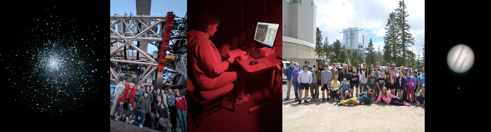

The TIMESTEP program: undergraduate research mentoring and job training
Since Fall 2023, I've worked as a graduate coordinator for the TIMESTEP Research Apprenticeship program at the University of Arizona. We match a cohort of 10-15 sophomore undergraduates to a year-long paid research project with faculty in the physics and astronomy departments. As a coordinator, I support 4–5 students directly through biweekly one-on-one meetings and professional development advice, and work with the other coordinators to prepare weekly workshops on research skills. These workshops include reading scientific papers, computing architecture and the terminal, git and Github, preparing and delivering oral and poster presentations about research, and more: skills that are critical for nearly any research project in academia or industry, but which are typically taught late in the degree program or not at all.

As of 2025, we are working to develop our Apprenticeship workshop curriculum into a new one-credit elective class, ASTR 276, to be offered for the first time in Fall 2026. I am working with the program coordinators and department leadership to justify the class' scope and content and align them to the Department of Astronomy's learning outcomes.
In 2023, I heard from undergraduate students at Steward Observatory about the difficulty of exploring the ongoing research in the department, since many research summaries in the faculty directory were missing, outdated, or not written at a level comprehensible to a freshman or sophomore undergraduate. In response, I created the Steward Research Map (which I currently maintain), an interactive, centralized space for undergrads (and others!) to explore the space science research conducted by faculty at the University of Arizona.

Arizona Astronomy Camp: one-of-a-kind research experiences at the high school level and beyond
I've worked with Dr. Don McCarthy and the Arizona Astronomy Camp since 2024. During the two, week-long summer camps for teenagers, the campers learn about astronomy through hands-on activities during the day (solar observing, interactive scale modeling, online research) and at night (operating the telescopes with guidance from the counselors) in the beautiful Mount Lemmon environment. As counselors, we aid the campers in completing self-directed research projects and gathering data using the research-class telescopes available in Southern Arizona: these projects range from calculating exoplanet properties from an observed transit, to measuring the redshift of the nearest quasar, 3C 273.
Through Astronomy Camp and my TA experience at Steward Observatory, I am a certified observer on the 61" Kuiper telescope on Mount Bigelow, with experience leading eyepiece, imaging, and spectroscopic observations.